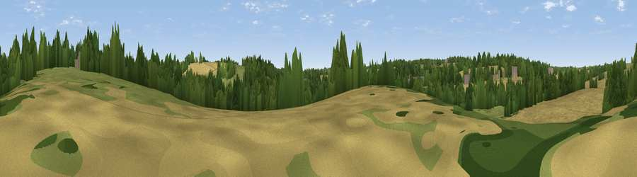

Larks Hill
#45152 in England · top 73% of its area beats it · near BraughingThe view, rendered

A 360° render of this exact spot computed from the terrain model, tree cover and land cover — summer colours, afternoon light, calibrated against photographs of famous viewpoints. Real trees, hedges and buildings will differ in detail.
The panorama
Grey silhouette: terrain skyline in each direction (720 bearings, Earth curvature and refraction included). Dashed green: skyline with trees (+15 m) and buildings (+8 m) as obstacles. Blue strip: how far the ground is visible on each bearing.
Where the view opens
Wedge length = distance to the farthest visible ground on that bearing (vegetation-aware). Rings at 10, 25 and 50 km.
What fills the view
50% cropland · 27% grassland · 20% woodland · 3% built-up
Angular shares of the visible panorama (visual magnitude), not map area. Landscape diversity 0.50 (0–1 Shannon).
Key numbers
More beautiful places nearby
The staircase of upgrades: each row has a higher view potential than everything closer. Driving times are estimates from straight-line distance, calibrated against real road routing — check an actual route before setting out.
| Place | Direction | Drive | Score |
|---|---|---|---|
| Tire Hill | NW · 6 km | ~13 min | 23.3 |
| Viewpoint near Thundridge | SSW · 10 km | ~19 min | 40.8 |
| Therfield Hill | NNW · 14 km | ~25 min | 45.2 |
| Viewpoint near Heydon | NNE · 15 km | ~27 min | 50.0 |
| Viewpoint near Baldock | WNW · 16 km | ~28 min | 53.9 |
| Viewpoint near Royston | NNW · 16 km | ~28 min | 56.6 |
| Viewpoint near Hexton | WNW · 27 km | ~43 min | 65.4 |
| Viewpoint near Church End | W · 38 km | ~57 min | 65.8 |
51.90610, 0.01838 · source: osm peak · position refined by local search. Computed location — check access rights before visiting.